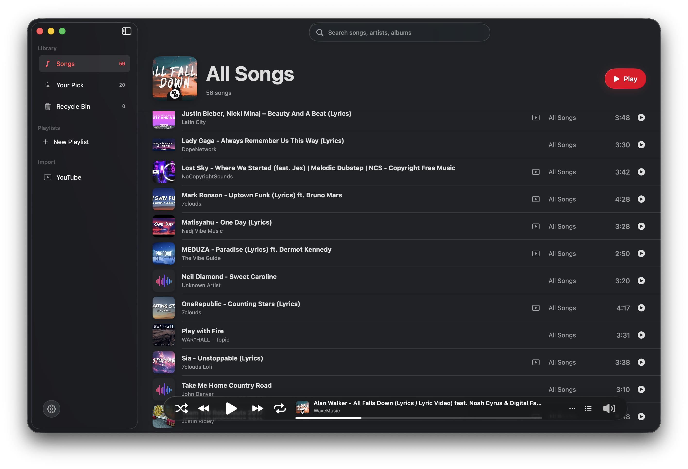
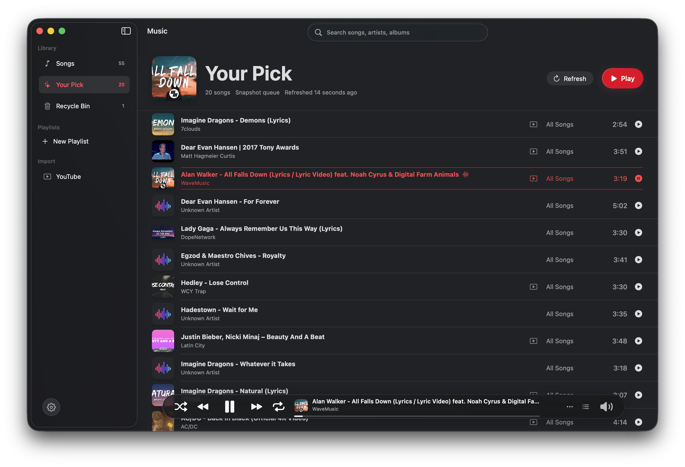
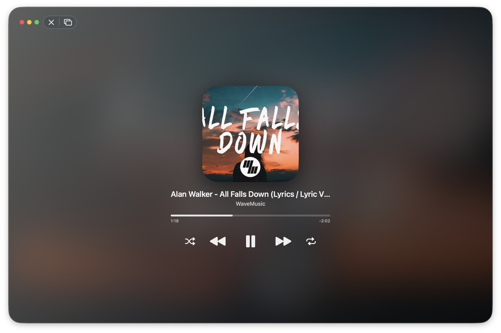
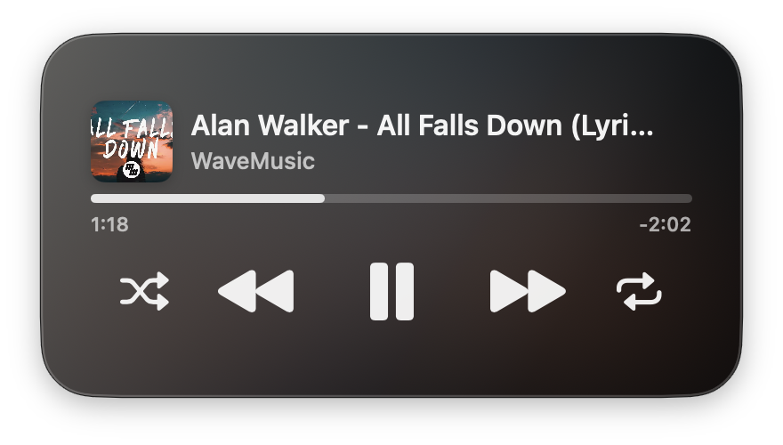

Native macOS playback
Music. Native again.
Local MP3 playback, smart picks, guided YouTube import, compact players, and a local bridge prepared for a future Jarvis assistant.

The player
Everything feels owned by the app.
a native interface with a real library, precise controls, and a play bar that stays calm over the music.

Music references the shared MP3 folder directly, keeps files in one place, and refreshes when the library changes. This allows you to listen to your favorite songs, without WiFi.
Playback, queue state, and now-playing information live in the macOS app.
Your Pick
A queue that learns from listening.
Plays, skips, repeats, manual selections, completion, and recent listening, you name it... all contribute to a smart recommendation snapshot of your favorite songs.

YouTube import
Search, choose, download, rename, done.
Music keeps the import flow inside the app. This way, you can download your favorite songs for free, rename them, and keep them forever.
Find a video
Search inside Music or paste a URL for content you are allowed to save.
Watch progress
Follow audio extraction, metadata, cover art, and library refresh in one bar.
Review and save
Rename the song, keep the thumbnail, and land back in All Songs with it selected.
Windows
Big when you want the song. Small when you only need controls.


Jarvis bridge
Ready for a local assistant.
Jarvis is an unreleased local assistant currently under development. Music is being prepared with a local bridge so that our Jarvis assistant can ask for candidates, pick naturally, and control playback autonomously.
Future-ready, local-only, scriptable.
When Jarvis is connected, it can search songs, refresh the library, refresh Your Pick, open YouTube import, play by id, pause, resume, stop, and read now-playing state.
Designed for control from this Mac, not a cloud service.
Jarvis can receive predictable status, search, and playback results.
The app side is prepared for a future assistant workflow.
Download
The Mac build belongs here.
Download Music for macOS as a packaged DMG, install it in Applications, and start building a local library that feels at home on the Mac.
Music for macOS
Native playback, local library, guided import, and compact windows.
Version 0.1.7 (build 8)
Own your library. Play it beautifully.
© Leo Xu 2026